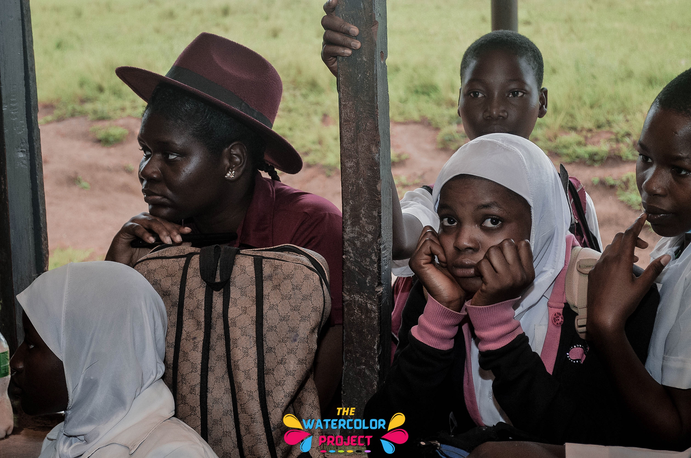
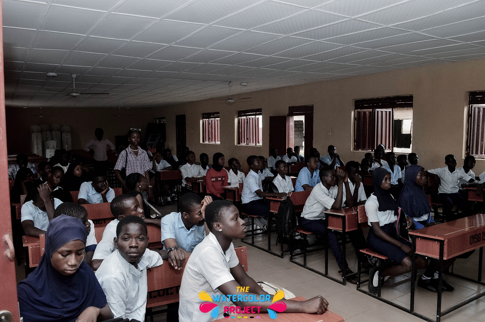

The Education Crisis in Nigeria
10.5M
Children aged 5-15 out of school
70%
Of Nigerian children suffer from learning poverty
64%
Of girls drop out of secondary school
In Nigeria today, learning poverty affects 70% of children—meaning most 10-year-olds cannot read and understand a simple text. This isn't just about out-of-school children. It's about the deplorable state of education in the country.
We often treat access and quality as separate issues, but they're inseparable. Access makes no difference if the quality is poor. Many students fail exams not because they lack ability, but because they cannot read and understand the questions.

"Education isn't about wearing uniforms. It's about becoming better: thinking better, knowing better, and doing better."

Africa has the fastest-growing youth population in the world
By 2030, Africa is projected to have about 42% of the world's youth. Whether this will be a crisis or an asset depends on us. We must act now to prepare these young people for the challenges and opportunities of the 21st century.